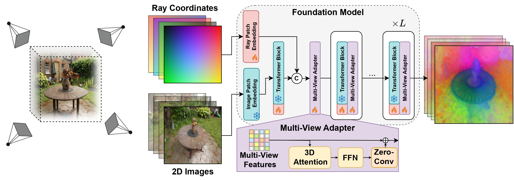
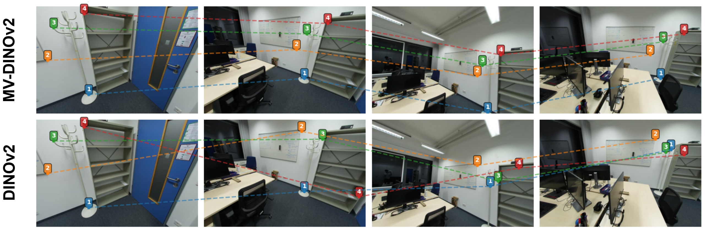
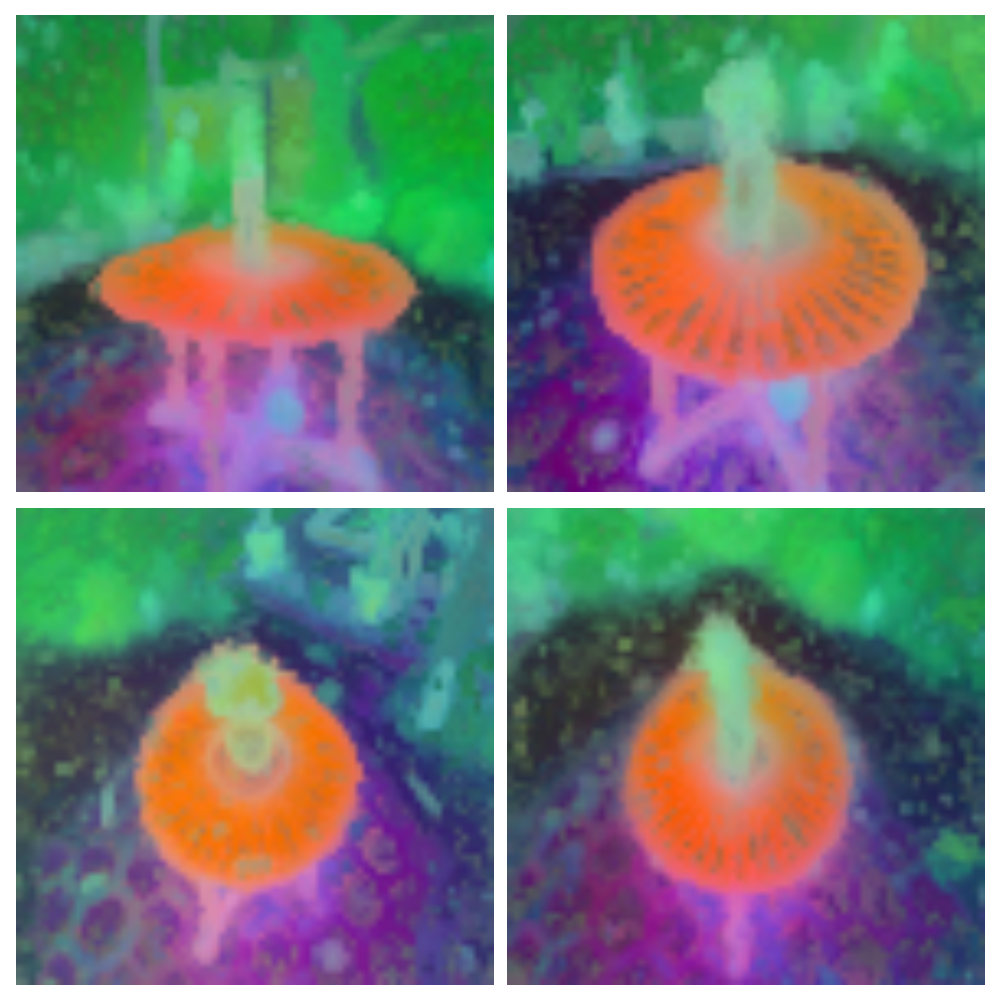
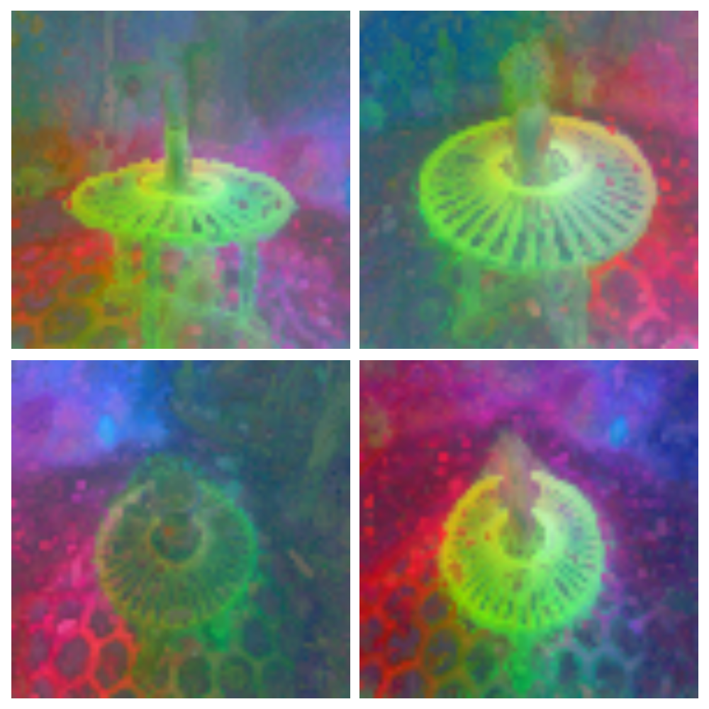
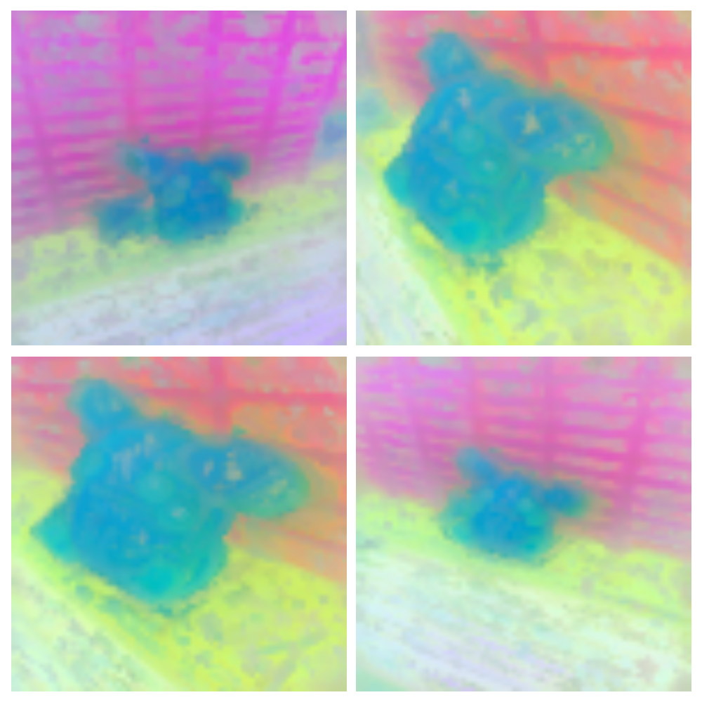
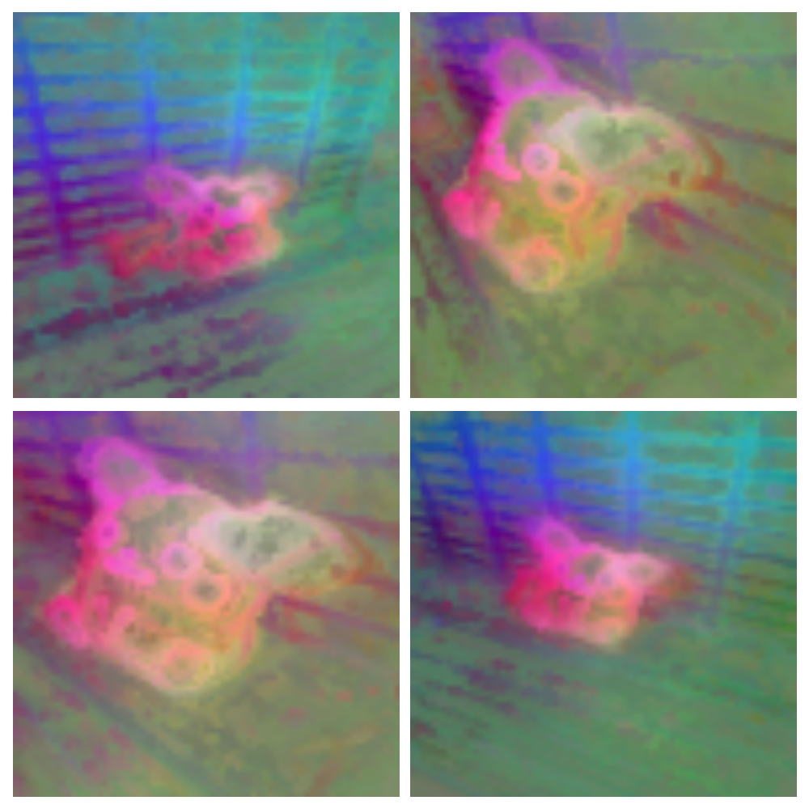
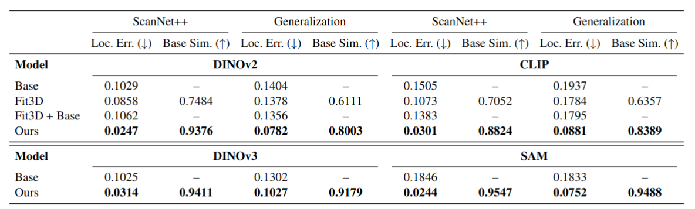
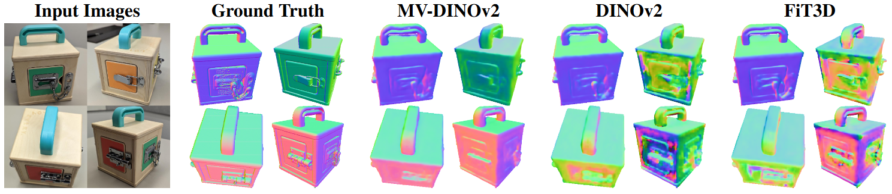
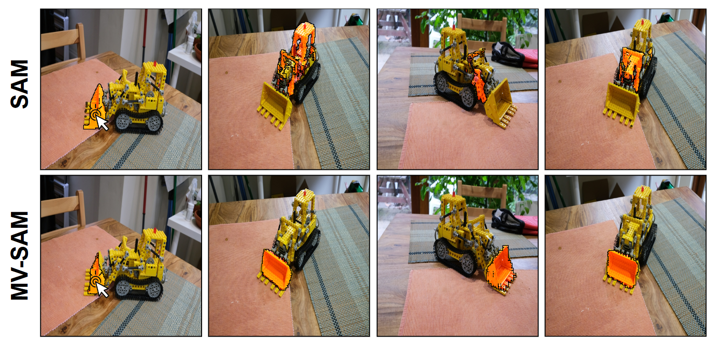

Abstract
Foundation models are vital tools in various Computer Vision applications. They take as input a single RGB image and output a deep feature representation that is useful for various applications. However, in case we have multiple views of the same 3D scene, they operate on each image independently and do not always produce consistent features for the same 3D point. We propose a way to convert a Foundation Model into a Multi-View Foundation Model. Such a model takes as input a set of images and outputs a feature map for each image such that the features of corresponding points are as consistent as possible. This approach bypasses the need to build a consistent 3D model of the features and allows direct manipulation in the image space. Specifically, we show how to augment Transformers-based foundation models (i.e., DINO, SAM, CLIP) with intermediate 3D-aware attention layers that help match features across different views. As leading examples, we show surface normal estimation and multi-view segmentation tasks. Quantitative experiments show that our method improves feature matching considerably compared to current foundation models.
Multi-View Foundation Model Architecture

Our architecture augments a pre-trained 2D foundation model with multi-view spatial adapters (MV-Adapters) inserted after each Transformer block. Given multiple input images and their camera poses, the model extracts per-view features and fuses them using 3D-aware adapter layers conditioned on ray-based pose embeddings. This produces geometry-consistent feature maps across all views without requiring an explicit 3D reconstruction.
Feature consistency across views

Numbered markers denote query points in the first image, with dashed lines showing their matching features in the other views. MV-DINOv2 maintains consistent correspondences that converge to the same 3D points, whereas base DINOv2 suffers from geometric drift across viewpoints.
How is Structure Embedded?
MV-DINOv2 Features

Delta from Baseline

MV-DINOv2 Features

Delta from Baseline

Left: PCA visualization of MV-DINOv2 features showing clear semantic structure. Right: PCA visualization of the difference between MV-DINOv2 and the base model's features, revealing a strong 3D positional pattern—indicating the model encodes geometric information while preserving semantic space.
Quantitative Results

Our method delivers consistently stronger multi-view feature consistency across datasets and foundation models, while remaining closely aligned with each model’s original representation.
Applications
Surface Normal Estimation

By simple feature probing we produce surface normals that are globally consistent rather than just view-dependent. This proves our representation understands the underlying structure, keeping surface orientations aligned across all viewpoints without any additional training.
Consistent Multi-View Segmentation

A single click in the first view instantly yields consistent semantic segmentation masks across all views with MV-SAM, whereas standard SAM fails to maintain such consistency.
BibTeX
@article{MultiViewFoundationModels2025,
title={Multi-View Foundation Models},
author={Leo Segre and Or Hirschorn and Shai Avidan},
year={2025},
eprint={2512.15708},
archivePrefix={arXiv},
primaryClass={cs.CV},
url={https://arxiv.org/abs/2512.15708},
}